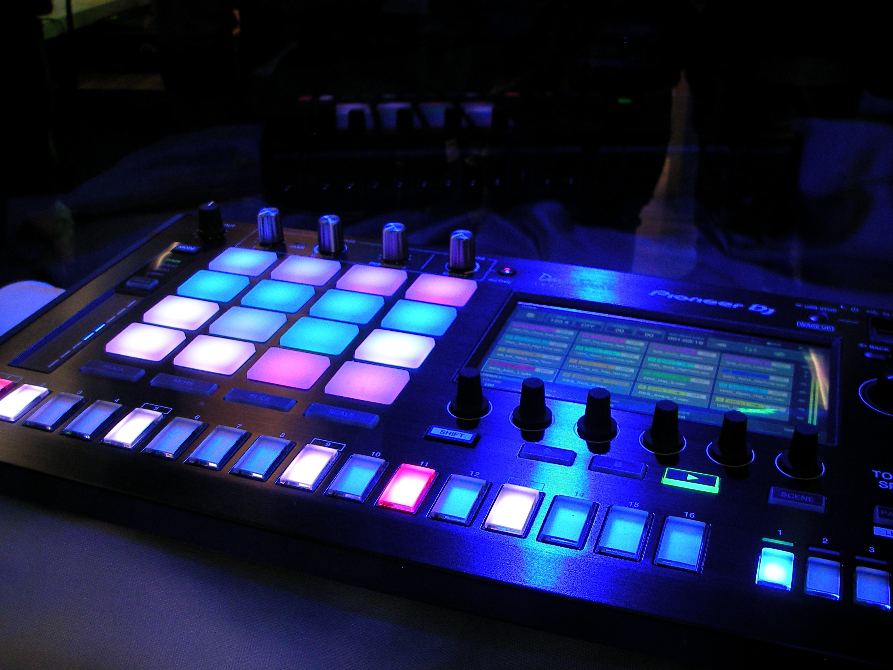

<app-navbar></app-navbar>
<div class="container-fluid">
    <div id="bootstrapCarousel" class="carousel slide section-dark" data-ride="carousel">
      <!-- Slide Indicators -->
      <ul class="carousel-indicators">
        <li data-target="#bootstrapCarousel" data-slide-to="0" class="active"></li>
        <li data-target="#bootstrapCarousel" data-slide-to="1"></li>
        <li data-target="#bootstrapCarousel" data-slide-to="2"></li>
      </ul>

      <!-- The slides to show -->
      <div class="carousel-inner">
        <div class="carousel-item active">
          
          <div class="centered">
            <h1 class="presentation-title">UndertowFx</h1>
            <h2 class="presentation-subtitle text-center">An Indian electronic music artist based out of Cork.</h2>
          </div>
        </div>
        <div class="carousel-item">
          
          <div class="centered">
            <h1 class="presentation-title">UndertowFx</h1>
            <h2 class="presentation-subtitle text-center">Tracks inspired by Illenium, Deadmou5, El Ten Eleven, M83, Random Rab</h2>
          </div>
        </div>
        <div class="carousel-item">
          
          <div class="centered">
            <h1 class="presentation-title">UndertowFx</h1>
            <h2 class="presentation-subtitle text-center"></h2>
          </div>
        </div>
      </div>

      <!--  Controls (Left and right) -->
      <a class="carousel-control-prev" href="#bootstrapCarousel" data-slide="prev">
        <span class="carousel-control-prev-icon"></span>
      </a>
      <a class="carousel-control-next" href="#bootstrapCarousel" data-slide="next">
        <span class="carousel-control-next-icon"></span>
      </a>
    </div>
  </div>
<div class="recent-track" id="recent-tracks">
  <h1>Recent Tracks</h1>
  <app-tracks [songs]="tracks" [trackDetails]="trackDets" (index)="updateIndex($event)" ></app-tracks>
</div>

<footer class="footer">
  <div class="container">
    <div class="row">
      <nav class="footer-nav">
        <ul>
          <li><a href="https://www.linkedin.com/in/harshit-kumar-0055286a/"><i class="fa fa-linkedin-in"></i>Harshit Kumar</a></li>
          <li><a href="https://harshitkumar0603.medium.com/">Blog</a></li>
        </ul>
      </nav>
      <div class="credits ml-auto">
                <span class="copyright">
                    © 2020, made with <i class="fa fa-heart heart"></i> by Harshit Kumar
                </span>
      </div>
    </div>
  </div>
</footer>

<div>
  <div style="position: fixed;bottom: 0px;background: #5d5959; width:100%;padding: 10px 10px;">
    <div class="row">
      <span #duration class='form-control' type=text style="display: none">{{getDuration()}}</span>
      <div class="col-md-3 musicAction" style="margin-top: 12px;">
        <app-timer style="display: none"></app-timer>
        <button (click)="pauseTrack()" type="button" class="btn btn-danger btn-just-icon">
          <div *ngIf="play; else elseBlock"><i class="fa fa-pause"></i></div>
          <ng-template #elseBlock><i class="fa fa-play"></i></ng-template>
        </button>
        <button (click)="nextTrack()" type="button" class="btn btn-danger btn-just-icon"><i class="fa fa-step-forward"></i></button>
        <button (click)="stopTrack()" type="button" class="btn btn-danger btn-just-icon"><i class="fa fa-stop"></i></button>
        <button (click)="likeTrack(row)" type="button" class="btn btn-danger btn-just-icon"><i class="fa fa-heart"></i></button>
      </div>
      <div class="col-md-8" style="text-align: -webkit-right;">
        <p class="text-primary" style="font-size: 13px; margin-bottom: -10px; text-align: left">{{getSeekDuration()}}</p>
        <input #seekBar class='form-control' type=range min=0 max="{{duration.innerHTML}}" step=.1 value="{{trackCurrentDuration}}" ng-model='audio.volume' (change)="seekTrack(seekBar.value)">
        <div class="">
          <p class="text-primary" style="text-align: left">{{this.tracks[row].Key.split('/')[1].split('.')[0]}}</p>
        </div>
    </div>
    </div>
  </div>
</div>
